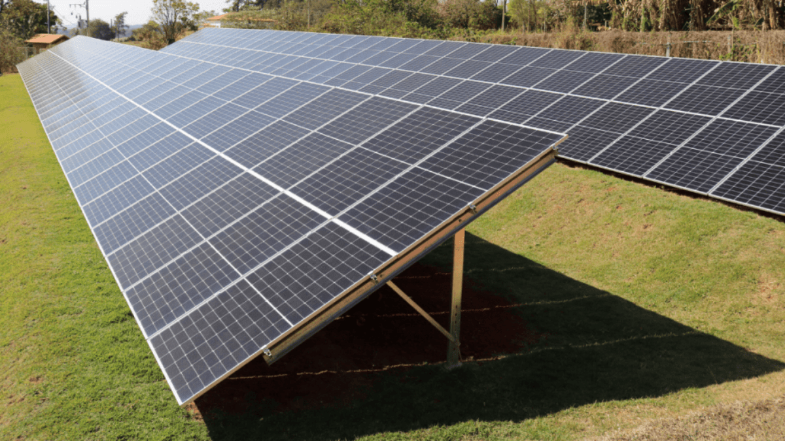

Placas solares fotovoltaicas
As placas solares, fotovoltaicas, convertem a luz solar em energia elétrica. A tecnologia usada se chama efeito fotovoltaico, captando a radiação solar, transformando em eletrecidade limpa, renovável e sustentável. Existem várias alternativas para tal, mas essa vem ganhando destaque no Brasil e no mundo, por conta do potencial de economia e seus benefícios ambientais.
A principal vantagem das placas solares está na redução da conta de luz. Como o consumidor gera a própria energia, pode-se diminuir significamente a conta de luz e a dependência da rede elétrica, até conseguir zerar sua fatura mensal, tudo dependendo do tamanho do sistema. Podendo gerar créditos que podem ser utilizados posteriormente.
Um ponto positivo é a durabilidade e baixa necessidade de manutenção. A maior parte dos painéis solares possui vida útil de 25 a 30 anos. Com uma instalação adequada e manutenções simples, o sistema funciona de forma segura e eficiente por longos períodos.
A energia solar contribui diretamente para a redução da emissão de gases do efeito estufa, já que não depende da queima de combustíveis fósseis. Além disso, trata-se de uma fonte silenciosa e que não gera resíduos durante a geração de eletricidade, tornando-se uma opção ideal para residências, comércios, indústrias e até para vários proprietários de áreas rurais.
Com a evolução da tecnologia, os sistemas solares estão se tornando cada vez mais acessíveis, eficientes e integrados a soluções inteligentes de gestão de energia. Investir em energia solar não é uma escolha sustentável, mas também uma estratégia econômica para o futuro inteligente.
Por que investir em energia solar em 2025?
O cenário energético global está em constante evolução, e a energia solar se destaca como uma das principais alternativas para quem busca independência energética e economia. Em 2025, com os incentivos ao uso de fontes renováveis, investir em placas solares se tornou mais vantajoso.
Além da economia na conta de luz, a valorização do imóvel é um benefício importante. Sistemas fotovoltaicos incluem valor à propriedade e são vistos como diferenciais positivos por compradores e investidores. Isso torna a energia solar uma solução que vai além da redução de custos, funcionando também como um investimento para o patrimônio do proprietário.
Sabe-se que a evolução tecnológica dos equipamentos impusiona essa escolha. Tendo o conhecimento que alguns painéis solares, possuem tecnologia N-type bifacial, oferecendo maior eficiência e durabilidade. Com garantias que chegam a 30 anos, os sistemas modernos entregam segurança, performance e retorno financeiro em longo prazo.
Intelbras e Canadian Solar: duas potências em tecnologia solar
A Intelbras, marca brasileira reconhecida por sua atuação em segurança eletrônica e comunicação, tem entrado também no mercado de energia solar. Com soluções voltadas para geração de energia fotovoltaica, a empresa oferece módulos de alta eficiência, inversores, string boxes e suporte técnico. Seus produtos se destacam pela qualidade, suporte nacional e fácil integração com sistemas já existentes, atendendo tanto projetos residenciais quanto comerciais.
Sabe-se que a Canadian Solar é uma das maiores fabricantes globais de módulos solares, com presença em mais de 160 países. Fundada no Canadá, a empresa combina alta tecnologia com grande capacidade de produção, oferecendo painéis com alta performance, como os modelos com células monocristalinas PERC e N-type. A Canadian possui um grande acervo em inovação e eficiência energética, sendo uma escolha plausível para grandes usinas solares e projetos que exigem alto rendimento a longo prazo.